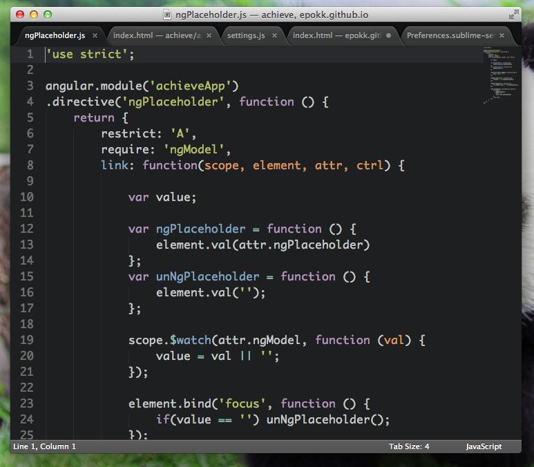

Ractive.js : Alternative à AngularJS
Quelqu'un a osé ? Concurrencer Google sur son propre terrain ! Mais bien sûr et il existe plusieurs MVC Javascript bien connus apparus bien avant. BackboneJS par exemple ou encore le rongeur EmberJS. Dans cet article je ne souhaite pas vous présenter ces frameworks mais une librairie qui permet de manipuler le DOM autrement, comme le fais AngularJS.
Dès le depart HTML n'a jamais été conçu pour créer des applications Web dynamiques. Des librairies tel que jQuery ou PrototypeJS ont grandement facilitées l'utilisation de Javascript pour rendre vos pages cool. Il est alors facile de recuperer un element de votre page en JS et lui ajouter toute sorte d'event / function / boule a facette ... La librairie que je souhaite vous presenter permet de garder une relation / liaison forte entre votre code Javascript et la structure HTML. Ce dernier devient alors un modèle pour votre application.
Rien de mieux qu'un "Bye World" pour commencer (oai j'essaye d'innover pour pas te perdre)
HTML
http://plnkr.co/edit/QBce9kNC8PozcciPGUlw
Quelques directives Angular
Depuis quelques mois, j'ai la chance de travailler avec un framework JS que je trouve formidable. Il se nomme AngularJS. Je ne vais pas vous le présenter car bien d'autres sites l'ont déja fait. Si vous ne le connaissez pas encore je vous conseille vivement d'aller taper quelques lignes de code avec ce framework avant de lire la suite de cet article. Comme ça apres, "t'es chaud" !
Ce que je souhaite partager, ce sont les directives. Une directive est un attribut, d'un élément HTML, qui lui octroi des fonctionnalités supplémentaires : tel que lancer une action quand on clique sur celui-ci ou encore, répéter cet element autant de fois qu'il y a d'objet dans un tableau associé. AngularJS fourni déja un ensemble de directives pour effectuer la plupart des actions / interactions. Il s'enrichie au fur et à mesure des versions. Malgré ce packetage, il faut parfois en écrire soi-même. Et comme ce besoin peut être récurrent à travers vos projets, il est intéressant de se créer une boite à directives.
Voici celles que j'utilise régulièrement :
Si vous souhaitez en ajouter d'autres, faîtes des pull request sur ce projet. J'enrichirai cet article par la suite.
Ma configuration pour Sublime Text
Petit déja tu aimais l'informatique (dans une cave), tu jouais aux jeux videos avec tes potes et tu essayais de comprendre quelques lignes de codes. Maintenant tu les comprends ces lignes, tu as grandis dans cet univers. C'est bien. Tu as debuté en éditant tes premiers fichiers avec vim, gedit ou encore notepad. Puis sont apparus des IDE avancés tel que : Eclispe, Netbeans ou encore Aptana. Tu y a goûté, mais au fur et à mesure de son utilisation, tu sentais que quelque chose t'échappais. Tu te sentais frustré, faible pour avoir suivi les conseils d'un collègue binoclar aux cheveux longs. Ce côté simple et limite que possedaient tes premiers editeurs. Tu as peut-être basculé sur Notepad++, par la suite, le trouvant à ton goût ou même, tu as compris que le développement n'étais pas fait pour toi et vends des calleçons / strings de couleur sur les marchés. Mais tout ça c'est fini !

Si tu ne le sais pas encore, nous sommes en 2013 et un éditeur de développement est sorti, il se nomme Sublime Text. Il a connu un engoûement aupres des développeurs avec la version 2. Cet éditeur de texte est codé en C++ / Python par Jon Skinner et il est disponible sous toutes les plateformes (Mac, Linux et Windows). Pour tout ce qui est de l'installation (Package Control et autres plugins kikoolol) je te laisse trouver celà sur les Internetz. Ce que je veux te présenter ici dans cet article, c'est ma configuration. Tu peux la copier dans ton fichier de configuration () et te la peter. Je te laisse le choix également du color_scheme même si j'apprécie actuellement l'excellent "Tomorrow".
{
"caret_style": "phase",
"detect_slow_plugins": false,
"draw_minimap_border": true,
"font_face": "Source Code Pro",
"font_size": 16,
"highlight_line": true,
"ignored_packages":
[
"Vintage"
],
"margin": 0,
"trim_trailing_white_space_on_save": true
}
Tu peux télécharger l'excellente police "Source Code Pro" ici : https://github.com/adobe/source-code-pro
Le color_scheme "Tomorrow" et le thème "Phoenix" sont disponibles via Package Control.
Sublime Text est sorti en version 3 mais tous les plugins n'ont pas encore été transférés dessus. Voici la liste de ceux disponibles.
Le BOLD, c'est la vie
Coder dans une cave a l'abri du soleil c'est bien mais il faut aussi savoir se ressourcer. Je ne compte pas te présenter la recette du riz au coca-cola ou autre malbouffe. Ici tu lis le blog de quelqu'un qui aime se faire chier, qui aime se prendre la tête et faire les choses bien. Donc comme premier essai je te présente ma recette Crêpe oignons champignons. Régales toi et impressionnes ta copine ou ta mère.
Ingrédients
- Huile d'olive
- Du vinaigre balsamic
- 2 gros oignons
- Un paquet de tortillas (par 8 en general, au pire ça t'en fera plus pour en emporter au boulot et te la péter devant tes collegues qui mangent leur barquette plastique Fleury Mich Mich)
- Des champignons frais (tu peux aller les chercher en forêt en suivant les vieux qui s'égarent dans les bois ou acheter une conserve; je privilégie la première solution sinon tu es pas un vrai !)
- Du gruyère rapé
- Du persil
- Le couple sel et poivre
- Une grosse salade verte (que tu n'auras pas acheté en sachet pour éviter que tes enfants soient roux, "Il faut créer des légendes pour éduquer la populace")
Avec 2 cuillerées à soupe d'huile d'olive faire fondre les oignons que tu auras précédement coupés en tout petit morceaux (fais toi chier, ça vaut le coup). Ajoutes une cuiller à café de sucre pour les faire carameliser pendant 3 min puis les réserver. Effectuer cette même étape avec les champignons.
Dans ta poêle IKEA, dispose une première tortilla et fais la revenir 1 min, puis ajoute ton mélange oignons / champignons. Parsèmes le tout de fromage rapé.
Les deux étapes précédentes sont à répéter autant de fois que tu as d'invité. Exemple : tu reçois tes parents dans ta cave, ça fait trois personnes (donc tu dois répéter encore deux fois les opérations précédentes).
Sers les croustillants aux oignons et champignons avec la salade que tu arroses généreusement de vinaigre balsamique et d'huile d'olive.
Pour montrer que tu n'es pas parfait à tes hôtes, tu peux rajouter au dernier moment des pignons de pains ou des éclats de noix (décortiquées) en disant : "Mince j'avais oublié ceci !"
Régales toi !